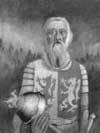

Galler’in son bağımsız lideri Owain Glyndwr (1354-1413), Gal milliyetçilerinin İngiliz işgalcilerini kısa süreliğine de olsa ülkeden sürdükleri bir başkaldırıya liderlik etmiştir. Sonunda isyan bastırılmış olsa da, Glyndwr İngilizler tarafından asla yakalanamamış ve bundan sonraki yaşamı hakkında hiçbir şey bilinmediği için mitlere konu olmuştur.
Gal asilzadelerinden olan Glyndwr ülkenin kuzeydoğusunda doğdu. İlk önceleri İngiltere Kralı 2. Richard (1367-1400) için çalışıyordu. Galler 13. yy’da İngiliz egemenliğine girmiş ve işgalciler kendilerine karşı gelişen bütün direniş hareketlerini bastırmışlardı.

1400 yılında Richard azledilip yerine kuzeni 4. Henry (1366-1413) geçince Glyndwr’ın muhalefet hareketi başlamış oldu. Richard, Galler tarafından bir müttefik olarak görülüyordu. Pek çok asil, yeni krala karşı onun tarafını tutmuştu. Henry taraftarlarının Galler’i kontrol etme çabaları ise sadece halkın hoşnutsuzluğunun artmasına neden oldu.
İsyanı kontrol eden Glyndwr, 1400 yılında kendisini Gal Prensi ilan etti (bu unvanı taşıyan son Galli olacaktı). Sonraki yıl Orta ve Kuzey Galler de isyana katıldı. 1402 yılında isyanı destekleyerek İngiltere’yi zayıflatmak isteyen Fransızlar’dan yardım almaya başladı. Birkaç yıl boyunca, Galler’in kontrolünü elinde tuttu. Bir parlamento kurdu ve 1404 yılında resmen tahta çıktı.
1405 yılında Fransızlar güçlerini geri çekmeye başladılar. Ardından Henry saldırıya geçti. Aralarında Glyndwr’ın pek çok akrabasının da bulunduğu Gal liderleri yakalanarak Londra Kulesi’ne hapsedildiler. 1410 yılında İngilizler, Galler’in büyük bölümünü geri aldılar. Glyndwr ve onun destekçileri ormanlara kadar takip edildi, ancak birkaç yıl daha İngilizlere karşı gerilla saldırıları düzenlemeyi başardılar.
Glyndwr hiçbir zaman yakalanamadı. Sonraki yıllarda, Gal folklorünün kahramanlarından biri haline geldi.
Ek Bilgiler
1- Glyndwr, Shakespeare’in 4. Henry oyununun birinci bölümünde Owen Glendower adlı bir karakter olarak karşımıza çıkar. Akıcı konuşmasıyla dikkat çeken Galli bir isyan lideridir.
2- 2004 yılında bir yazar, Glyndwr’ın kayıp mezarının Llanwrda’da bir kilisenin altında olduğuna dair kanıtlara ulaştığını ileri sürdü. Burası batı Galler’deki küçük bir köydü. Başka tarihçiler ise Glyndwr’in mezarının İngiltere’de olduğuna inanmaktadırlar.
3- İsyanın 600. yılı kutlamaları sırasında ünlü rock grubu Led Zeppelin’in solisti Robert Plant (1948-), Glyndwr’ın Machynlleth’te heykelinin dikilmesi için bağışta bulundu. Kelt mitolojisine hayran olan Plant, söylendiğine göre ünlü “Stairway to Heaven” (Cennete Giden Merdivenli Yol) şarkısının sözlerini Galler’de tatil yaparken tanık olduğu şeylerden esinlenerek yazmıştır.